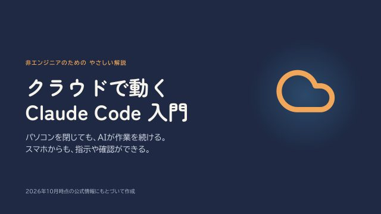
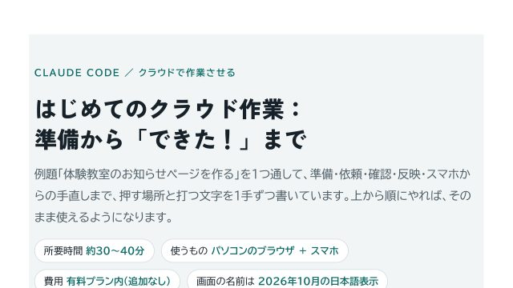

この講座について
「Claude Code（クロード・コード）」を、自分のパソコンではなくクラウド（Anthropic社が用意したパソコン）で動かす方法と、スマホから指示や確認をする方法の入門講座です。1本およそ3分、全5回（合計およそ13分）。プログラミングの経験は要りません。画面に出てくるむずかしい言葉は、「倉庫」「棚」「下書き」「赤ペン」「申請書」のたとえで言いかえています。全編に字幕（テロップ）が入っているので、音を出せない場所でもご覧いただけます。
はじめての人は、第1回からどうぞ。
スライドと手順書は、ページの下からもらえるよ。
もしかして、こんなことで困っていませんか？
作業中、パソコンを閉じられない
クラウドに頼めば、パソコンを閉じても作業は続きます。できあがったらスマホで確かめられます。
外出先からスマホで頼みたい
専用のアプリは要りません。いつもの Claude アプリの「Code」から、指示も確認もできます。
GitHub の言葉が分からない
リポジトリ・ブランチ・プルリクエスト。画面に出る言葉を、身近なたとえで覚えます。
第1回 「クラウドで動く」とは
Claude Code は「手を動かすAIの作業員」。自分のパソコンで動かすこれまでの方法と、仕事を「よその工房」に預けるクラウドの違いです。
2分31秒
第2回 2分31秒
しくみと、3つの動かし方
頼む→写す→下書きで戻す→あなたが確かめる、の流れ。クラウド・自分のパソコン・リモートコントロールの違いも整理します。
第3回 2分51秒
はじめ方と、頼み方
準備するもの3つと、最初の4ステップ。伝わる頼み方と「おまかせ度」、結果の確かめ方までです。
第4回 2分32秒
スマホから操作する
入口はいつもの Claude アプリの「Code」。クラウドに頼むか、自宅のパソコンをリモコン操作するか、迷ったときの決め方です。
第5回 2分19秒
注意点と、まとめ
知っておくと安心な6つのことと、慣れてきたら使う方法。最後に3つのたとえでおさらいします。
この講座で学べること
全5回を通して、こんなことができるようになります
スライド教材と実践手順書
動画で見たあと、手元で見返したり、実際に手を動かしたりするときにお使いください。

スライド教材クラウドで動く Claude Code 入門（スライド20枚）
この動画講座のもとになったスライドです。各回の図や表を1枚ずつ見返したいとき、印刷して手元に置きたいときに。

実践手順書はじめてのクラウド作業：準備から「できた！」まで
例題「体験教室のお知らせページを作る」を1つ通して、GitHubの準備から、頼む・確かめる・反映する・スマホで手直しする、までを1手ずつ。各手順に「押す場所・打つ文字・こう出たらOK・違ったとき」を書いています。所要時間は約30〜40分です。
HTML版はパソコンのブラウザで開くと、依頼文の「コピー」ボタンと、進み具合のチェック欄が使えます。
※どちらも2026年10月時点の公式情報と実際の画面にもとづいて作りました。画面の名前や対象のプランは変わることがあります。
分からないところがあったら、
遠慮なく聞いてね。
よくある質問
Q. プログラミングの経験がなくても大丈夫ですか？
A. 大丈夫です。やることは、言葉で頼んで、結果を確かめるだけです。むずかしい言葉は、たとえで言いかえています。
Q. 費用はかかりますか？
A. この動画講座とスライド・手順書は無料です。クラウドで動かすには Claude の有料プラン（Pro・Max・Team など）が必要ですが、クラウド代の追加料金はなく、ふだんの使用量の中で使えます（第3回）。
Q. GitHub（ギットハブ）のアカウントは必要ですか？
A. クラウドに頼む使い方では必要です（無料で作れます）。作り方は実践手順書の第1章で説明しています。
Q. 音を出せない場所でも見られますか？
A. すべての回に字幕（テロップ）が入っているので、音を出さずにご覧いただけます。
Q. 内容は最新ですか？
A. 2026年10月時点の公式情報にもとづいています。画面の名前や対象のプランは変わることがあるので、使う前に公式の案内も確かめてください。